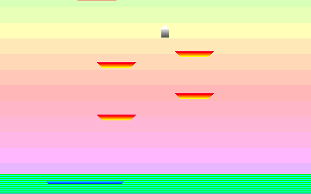
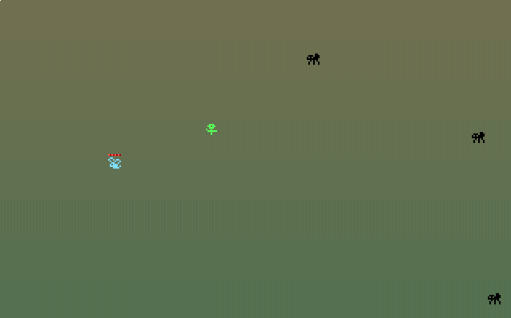
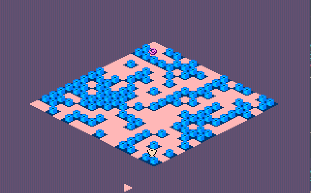

INTRODUCTION
Assembly is a wild beast. You can tame it and become a real programmer or run away screaming and get lost in a mist of abstractions.
Current compilers can summon incredible machine code. They fear no man except this one place called boot sector. 512 bytes of space. No more no less. Only the best of the best would be able to fit in such narrow passage.
A hero is in need. Where we are going there will be no Operating Systems. No debuggers. One small mistake and the world freezes. A fatal system crash is unavoidable.
I took my tools, floppy disks and run for the incredible journey!
HOW TO RUN?
It's simple.
- You need a floppy disk.
- You need a computer with a floppy drive.
- You need to boot from the floppy drive.
Using online emulation is also possible. You can use copy.sh (floppy image) or BootSector.Games (source code) to run the games.
GAME: LAND ME
My first game for boot sector. I learned basics needed to have a minimum viable game engine. Double-buffering. Keyboard input. A lot and a lot of try and error.
I survived. As a result I'm present this simple game.
Features
Game-play
Player steers movement of a rocket: left or right. Trying to avoid blocks and land on a sailing platform instead of an ocean.
- 
Download
- Codename: GAME1
- Download: Boot Floppy 386+
- Source Code: game1.asm
GAME: FLY ESCAPE
Fly Escape is a boot sector game developed by Krzysztof Krystian Jankowski ^ P1X, released version 2.1 on May 26, 2024. The game runs on Intel 286 processors in 16-bit real mode and features a simple yet engaging game-play experience in a VGA 320x200x256 graphics mode. The objective of the game is to control a fly, avoid spiders, and collect flowers to advance through levels.
Features
- VGA Graphics: Runs in 320x200 resolution with 256 colors.
- Double Buffering: Smooth rendering with minimal flickering.
- Player Control: Control a fly, avoiding spiders and collecting flowers.
- Randomized Levels: Entity positions and rotations are pseudo-randomly generated.
- Collision Detection: Accurate pixel-based collision detection.
- Multiple Levels: Progress through increasing levels of difficulty.
- Life System: Start with 4 lives; lose a life when colliding with spiders.
- Entity Types: Different entities with unique behaviors:
- Spiders: Dangerous enemies to avoid.
- Flowers: Collect these to advance to the next level.
- Animated sprites: Three sprites each 8x7 pixels in 2 frames
- Level and live indicator: Dots in top-left of the screen and a line under fly.
- Keyboard Controls: Rotate the fly to navigate through the game environment.
- Compact Size: Entire game fits within a 512-byte boot sector.
- 
Download
- Codename: GAME3
- Download: Boot Floppy 386+
- Source Code: game3.asm
- Scene: Pouet
- Support: Itch.io
GAME: BIT OF A TREASURE
Overview
The game involves navigating a player character through a level to collect a treasure while avoiding collisions with non-movable tiles. The game features simple but effective isometric graphics to create a pseudo-3D effect.
Game-play
Collect the treasure and avoid the walls. Swap level designs to find the best path.
Controls
- Arrow keys - move the player
- Enter - toggle level designs (4 in total)
- ESC - restart game after failed move
Features
- Pixel Art Sprites: 8x8 with 2 colors
- Isometric Graphics: The game employs isometric projection to create a 3D-like visual experience using 2D sprites.
- Map: One, procedurally generated, map with four level designs.
- VGA Mode: Utilizes 320x200 pixels VGA mode with 256 colors.
- Keyboard Controls: Intuitive input is used to control the player character. Auto alignment moves to the grid.
- Double Buffering: Implements double buffering to reduce flickering and provide smoother animations.
- 
Download
- Codename: GAME6
- Download: Boot Floppy 386+ MS-DOS .COM
- Source Code: game6.asm game6-dos.asm
TOOL: VGA GAME FRAMEWORK
Details about VGA Game Framework...
Download
- Codename: VGA
- Download: Boot Floppy 386+
- Source Code: vga.asm
ON-LINE RESOURCES
All the useful things I found for the x86 Assembly and boot sector programming.
Software
- Fresh - a visual assembly language IDE with built-in FASM assembler.